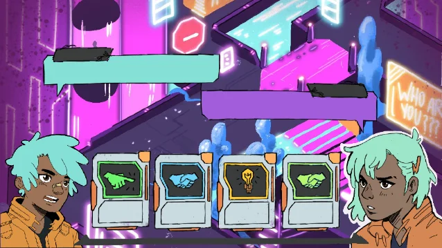
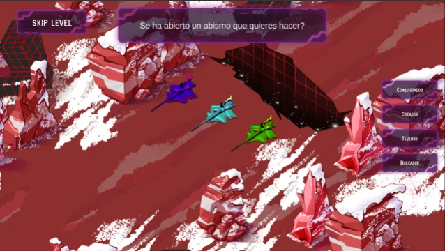
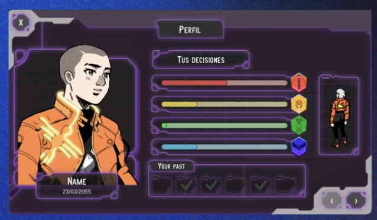

A game about unlocking your vocational profile. Play different minigames to generate a profile — a top down hand drawn game heavily focused on narrative elements, filled with a range of different activities and an in-depth choice system. Every action has a consequence.



Stakeholder Alignment & Applied Design: Collaborated extensively with the client—a vocational psychologist—through iterative briefings to translate complex psychological frameworks into engaging minigames, ensuring all interactive systems operated strictly within the required clinical parameters.
Holistic Design & Production: Co-defined the overarching project vision and assisted in production management to maintain team alignment. Owned the end-to-end design of puzzles and level architecture, alongside character animation and narrative development.
UX Research & Playtesting: Conducted rigorous, targeted user testing to validate visual readability, narrative impact, and overall minigame efficacy, guaranteeing that the mechanics successfully delivered the intended psychological processes without sacrificing the player experience.
My daily pipeline is heavily structured around alignment, iterative momentum, and bridging the gap of a fully remote team. To maintain the frictionless collaboration of a physical studio, I implemented a 'virtual office' approach using Discord, where every team member maintained their own active voice channel.
We kick off with a morning sync to prioritize tasks, and throughout the day, this open-channel setup allows us to drop in and resolve blockers instantly without scheduling overhead. In the afternoons, I pair up with my co-designer to review work and iterate. We close out with a brief end-of-day touchpoint to catch any deviations, allowing me to prep solutions for the next morning.
To anchor this highly active environment, I enforce strict meeting hygiene: I conclude every discussion by verbally summarizing our agreements and immediately post the actionable notes to our group chat for complete visibility.